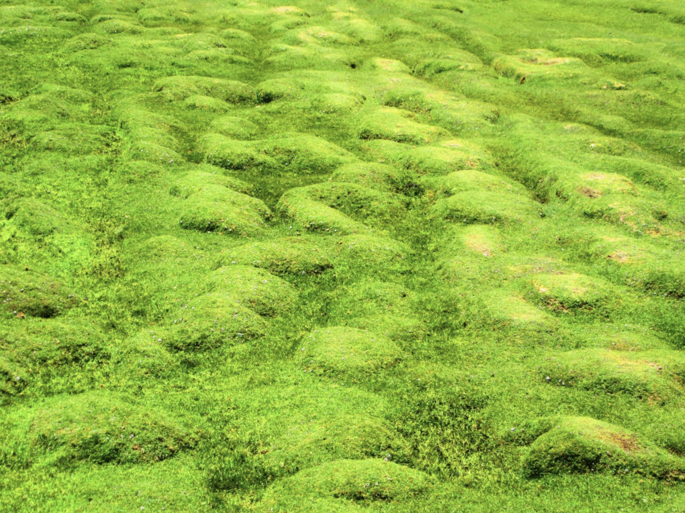
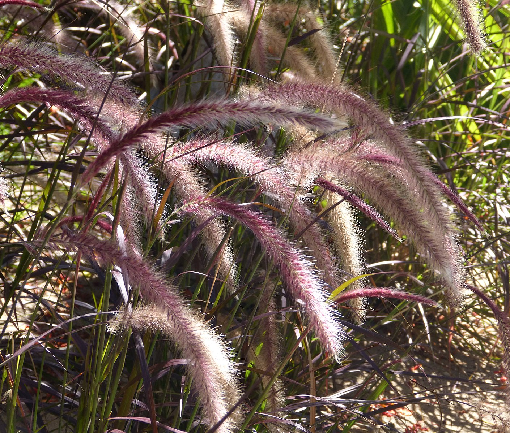
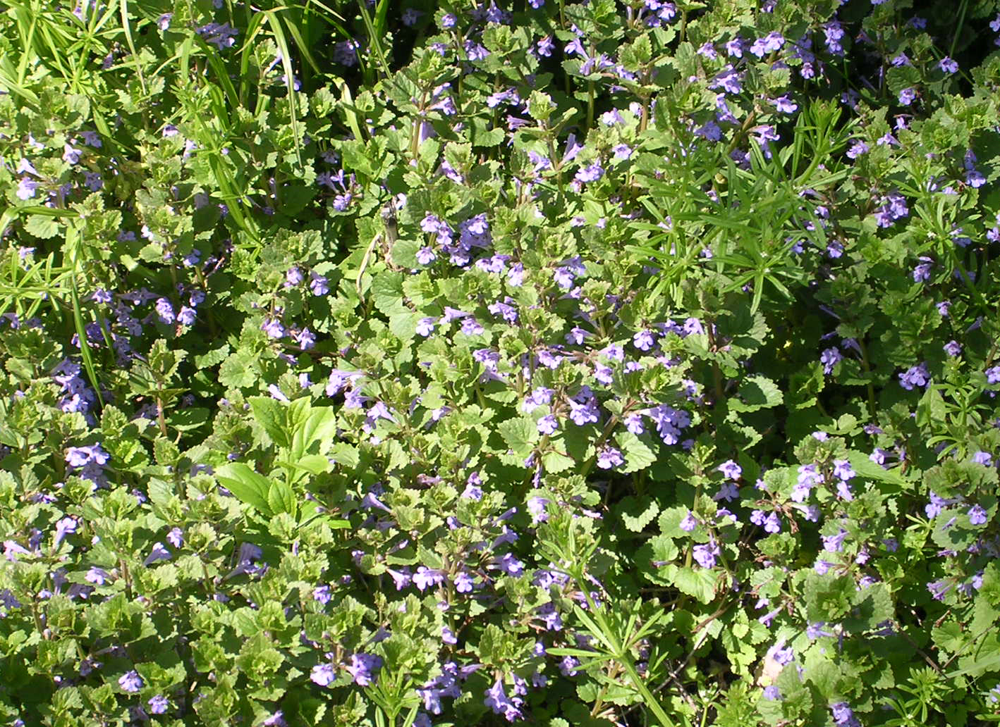
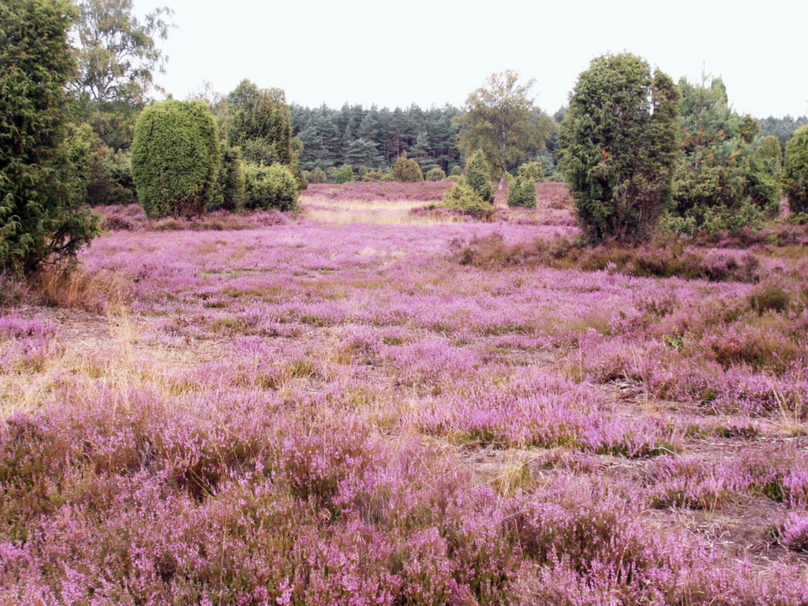
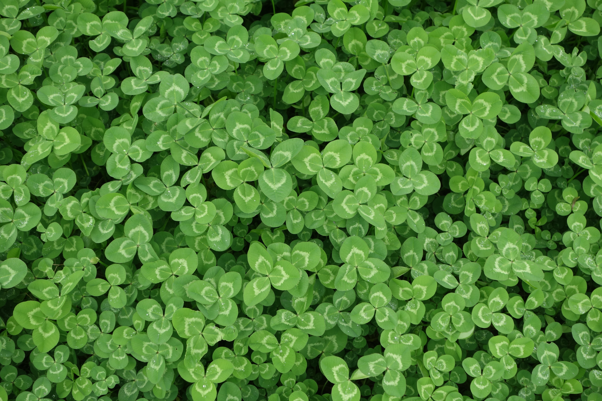
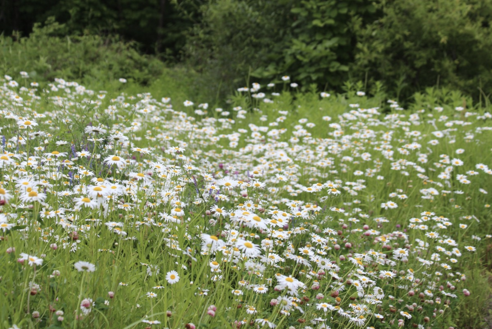

ALL ABOUT GRASS LAWNS
Home
History
Alternatives
Quiz yourself
Alternatives to grass lawns
Moss

Free to use through Creative Commons from PxHere
Ornamental Grass

By Malvern Cradley from Wikimedia Commons
Creeping Charlie

By Jay Sturner from Wikimedia Commons
Red Creeping Thyme

Free for use through Creative Commons from PxHere
Clover

Photo by Kiki Wang onUnsplash
Chamomile

Free to use with Creative Commons from PxHere
previous
next